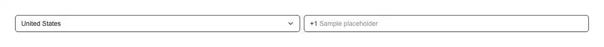

An international phone number field: a searchable country picker, that country's calling code shown as a live prefix, and one E.164 string ("+819012345678") coming back out. Reach for it wherever a form asks for a number someone can actually be reached on: sign-up and onboarding; two-factor authentication and SMS one-time codes; WhatsApp, SMS and voice notification preferences; shipping, billing and delivery contact details; the callback number on a support or contact form; restaurant, clinic, salon and appointment booking; driver, courier and rider contact on a marketplace; the phone row on a CRM or address-book record; KYC and identity verification; account recovery; and the "mobile" field in profile, account and organisation settings. Common asks it answers: "phone input", "phone number input react", "international phone input", "phone input with country code", "country code selector phone", "tel input component", "E.164 input", "shadcn phone input", "shadcn phone number field", "react-phone-number-input alternative", "intl-tel-input react", "phone field with flags", "dial code dropdown", "mobile number input", "international telephone input shadcn", "phone number formatting as you type". Official shadcn/ui has nothing for telephones — not a phone item, not a `type="tel"` anywhere in its sixty-three components, no calling codes and no country data — so the whole of this is on you, and the data is where hand-rolled versions go wrong. It is also the one field in this family that cannot read its data out of the runtime: `Intl.supportedValuesOf` rejects every phone-shaped key, `Intl.Locale` exposes no telephony property and `Intl.DisplayNames` names regions but not calling codes, so no browser knows that Japan is +81. This component therefore ships the table — 246 countries, every ISO 3166-1 country that has an assigned calling code, cross-checked between two independent sources — and carrying it is a smaller liability than it looks, because calling codes are close to frozen: the last new one was South Sudan's +211 in 2011. The table holds calling codes and never a calling code plus an area code, which is the distinction hand-rolled fields miss: the Bahamas is +1, not +1-242, because 242 belongs to the ten-digit national number a Bahamian dials. Twenty-five countries share +1 and four share +44, so the country is kept as its own piece of state and never inferred back out of the digits — a stored "+12425550100" cannot say whether its owner is in Nassau or Nevada, and `countryName` submits the answer alongside the number so the field comes back up on the country the person actually picked. What it does not do is as deliberate as what it does: it assembles, caps the result at E.164's fifteen digits and spaces them for reading, and it never claims a number is valid. Per-country validity is a rule for 246 countries and the library that knows them is larger than this entire registry, so it is left to your submit handler rather than faked — a field that pretends otherwise fails exactly the people whose country it got wrong. Typing is handled properly rather than approximately: digits group as you type, the caret is tracked in digits rather than in character offsets so a number stays correctable in the middle instead of only from the end, Backspace and Delete remove a digit rather than a separator that was never typed (the single most common complaint about masked inputs), pasting "+81 90-1234-5678" moves the country and strips the code instead of doubling it, and `format` takes a mask like "## #### ####" for a form that only ever collects one country's numbers. Controlled or uncontrolled, and correct in both: `value` + `onValueChange` for the number, `country` + `onCountryChange` for the country, `defaultValue`/`defaultCountry` for neither. The digits stay in local state while the value round-trips, so a parent that debounces, validates or is simply slow does not erase what was just typed — the failure that makes most hand-rolled controlled phone fields impossible to type into. It is a real composite control, not a styled div: a `type="tel"` input with `inputMode="tel"` and `autoComplete="tel-national"`, the calling code wired into the input's `aria-describedby` so it is announced rather than being visual context a screen reader never reaches, the country picker a full `role="combobox"` listbox with search, arrow keys and `aria-activedescendant`, and a `focus-within` ring around the number half. `countries` narrows it to where you operate, `priority` pins the two or three countries most sign-ups come from, `flags` adds the flag emoji (off by default — Windows ships no flag glyphs), and `getDialCode()`, `splitPhoneNumber()`, `toE164()`, `formatPhoneDigits()` and `getRegionCountry()` are exported so a confirmation screen, an SMS log or an admin table spells the same number the same way. Styled entirely with shadcn tokens (input, ring, popover, muted-foreground), so it follows light and dark mode, and it ships zero npm dependencies — no libphonenumber, no country-data package, no icon package.

Rendered on the shadcn default neutral palette with harness-generated props.
pnpm dlx shadcn@4.21.0 add @pulld/phone-input
| licence | POINTER |
|---|---|
| primitive base | none |
| type | registry:ui |
| files | src/components/ui/phone-input.tsx |
| npm deps pulled | none beyond the pre-installed peer set |
| registry deps | https://pulld.pages.dev/r/country-select.json |
| semantic / palette / hex | 4 / 0 / 0 |
| writes shared ui/ | yes — can overwrite the project’s own primitives |